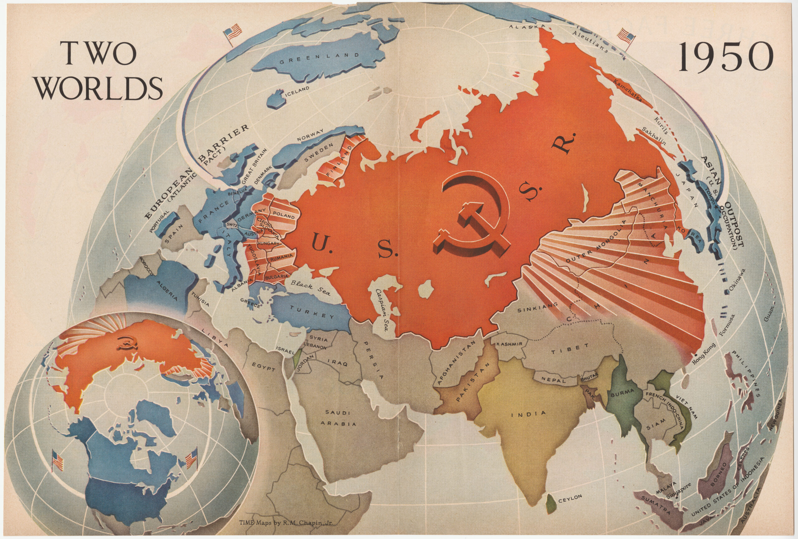

| Profesor coordonator: Acatrinei-Vasiliu Cristinel-Petrică |
| Elev candidat: Papuc Darius-Emanuel |
Confruntarea ideologică, politică și militară dintre SUA și URSS (1947–1991).
„Un război fără bătălii directe, dar care a împărțit lumea în două tabere timp de aproape o jumătate de secol."
